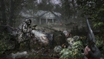

23.04.2023 Создано зеркало
Уважаемые посетители! К сожалению, сайт ogse.ru прекратил свое существование. Это стало серьезным ударом для и без того немногочисленных фанатов OGSE 0.6.9.3 версии 2.12. К счастью мне (GFOXSH) удалось создать полную копию сайта незадолго до прекращения его работы и теперь этот архив будет использован, чтобы возродить ресурс. Модератором и контентмейкером данного зеркала назначен Hank Anderson. Мы очень благодарны Deathdoor и команде разработчиков OGS Evolution за проделанную работу и намерены продолжить их дело, так как считаем версию 2.12 самой лучшей и наиболее проработанной. Проект будет жить!
16.07.2021 Отключение сервера
Так как за всё время так и не набралось хоть сколько-нибудь заметного числа одновременно играющих, смысла поддерживать сервер (и главное оплачивать доступ оного в Интернет) больше не вижу. Все наработки по DayZ собраны в архив до лучших времен.
08.05.2021 Альтернативаня ссылка на полный установочный пакет игры на Я.Диске
За предоставленное место спасибо Gesha
И наша группа в ВКонтакте
22.03.2021 DayZ OGSurv большое обновление DayZ пиратка бесплатно скачать без Стима
Игра обновилась до версии 1.03.21. Так как произошли довольно большие изменения, то проще обновление сделать через полную установку DayZ OGSurv. Ядро DayZ не изменилось, поэтому достаточно скачать только файлы DayZ OGSurv (2 шт. ~ 2 Gb). Перед установкой зайдите в папку с игрой и удалите папку OGSurv (можно конечно не удалать, но зачем занимать место больше ненужными файлами)
Более подробная информация об обновлении представлена в нашей группе в Дискорд.
В силу ряда объективных причин Намальск отключён, скорей всего навсегда. О причинах читайте в нашей группе в Дискорд.
Обновлен раздел DayZ FAQ.
За информацией, вопросами и предложениями обращайтесь в Дискорд на канал DayZ OGSurv https://discord.gg/3cZAQ5dKw9 или Deathdoor#9343
14.03.2021 DayZ OGSurv большое обновление
Вслед за выходом новой версии Намальска, обновляется и DayZ OGSurv. Прошу учесть, что с этой версии клиент Намальска идёт отдельным пакетом. Кому эта локация не интересна, можете его не скачивать. Инструкция по установке обновлена.
!Внимание! Перед установкой нового Намальска, необходимо в папке игры DayZ - папке OGSurv - удалить папку @SO (это мод добавляющий снежные кучи на землю и сосульки на здания. К сожалению мод с большим количеством проблем, поэтому авторскую версию пришлось удалить)
Так же обновились моды, входящие в основной клиент. Исправлен запуск/удаление BattleEye через лаунчер.
08.03.2021 DayZ OGSurv доступен для скачивания, установки и игры
В разделе Файлов доступен торрент для скачивания DayZ OGSurv. Раздача содержит ядро DayZ версии 1.11 и клиент OGSurv.
Перед скачиванием рекомендую ознакомиться с инструкцией по установке.
А перед игрой заглянуть в раздел DayZ FAQ.
08.03.2021 Обновление разделов и инструкция по установке DayZ OGSurv
В разделе Файлов добавил инструкцию по установке DayZ OGSurv.
P.S. Веду переговоры с некоторыми модмейкерами о переводе их модов на русский язык. Один мод, а именно по поиску зарытого добра, уже полностью мной переведён и доступен к использованию.
07.03.2021 Намальск и раздел FAQ
Постарался и таки запустил сервер с картой Намальска. Т.е. игрокам будут доступны все три карты сразу: Чернарусь, Ливония, Намальск.
На сайте начал заполняться раздел Вопросов и Ответов по серверам OGSurv. Рекомендую ознакомится перед игрой.
P.S. Аппаратная часть сервера претерпела некоторые изменения. Теперь это 24 ядра и 96 Gb ОЗУ. SSD диски.
26.02.2021 Сервер DayZ OGSurv 1.11 запущен
Сервер запущен в тестовом режиме. Для игры доступны карты Чернарусь и Ливония. В ближайшие дни будет выложен клиент (~3 Gb) для обладателей лицензионной версии игры (Steam), чуть позже полный клиент (~18 Gb) для не имеющих таковой (наличие или отсутствие учётной записи Steam абсолютно не важно).
08.02.2021 Очень много новостей про DayZ OGSurv сервер
Удалось разрешить ситуацию с легальной, и не совсем, версиями игры. Т.е. к серверу смогут подключаться как владельцы Steam версии, так и не имеющие его. Для владельцев Steam версии процесс сделан макисмально незатрагивающий их оригинальную игру.
Изначально будут доступны карты: Чернарусь и Ливония, в перспективе Намальск. Для запуска игр используется простенький, но удобный лаунчер, где помимо непосредственно запуска игр вы сможете легко сменить ник игрока.
Для всех игр подобран минимально-оптимальный набор модификаций, дополняющий, а не меняющий в корне оригинальную игру или превращающий её в неудобваримую солянку.
Всем желающим, но не имеющим игру будет доступен торрент на скачивание полной версии.
12.09.2020 Новости про DayZ OGSurv сервер
Вышедший на днях патч 1.09 для DayZ, и последовавшие за ним проблемы с нерабочиими модами на игру, окончательно убедили в использовании "отвязанной от Стима" версии игры. Это позволит в будущем осуществлять более плавный преход на новую версию, когда мододелы адапатируюст свои моды под новый патч.
Другие новости. Почти закончена настройка и баланс модов. Как писал ниже: упор будет на выживалку, но тем, кто хочет пострелять - тоже будет где развернуться.
28.07.2020 DayZ OGSurv сервер
Есть техническая возможность запустить приватный сервер для игры в DayZ Standalone. Сервер будет платным, что исключит присутствие большинства разновозрастной школоты и неадекватов и позволит нормально играть. Собранные средства пойдут на оплату интернета, выделенного IP-адреса, электричества. Мощность сревера (16 ядер и 48 Gb ОЗУ) достаточна для одновременной комфортной игры 60 человек и гораздо более (но пока выходить за рамки 60 не планирую). Настройки и подключённые моды ориентированы на сурв, а не бесконечную беспричинную стрельбу ПВП. Радикально увеличено количество заражённых. Нет торговцев. Оружие только из оригинальной игры. Много различного крафта и приятных мелочей. Игровой чат и создание пати (комманд игроков).
В даный момент идёт тестирование сервера на игровй процесс и совместимость модов. Если у вас есть опыт в настройке DayZ серверов, то от помощи не откажусь.
Если кто заинтересовался и есть вопросы, обращайтесь в дискорд Deathdoor#9343
28.07.2020 Отключение форума
18.11.2019 ChernobyLite в раннем доступе
Игрок выступает в роли физика, ранее работавшего на Чернобыльской атомной станции, страдающего от потери близкого человека в Чернобыльской катастрофе 30 лет назад, который возвращается в зону бедствия, чтобы найти своего партнёра. Большая часть однопользовательского геймплея вращается вокруг изучения Зоны отчуждения, сбора материалов и инструментов при столкновении со «сталкерами» и враждебным военным персоналом. Игрок также вынужден принимать решения, которые влияют на нелинейную сюжетную линию. Существует также система сбора ресурсов, которая позволяет создавать собственное оборудование и оружие. Любой персонаж может умереть, и каждая задача может быть провалена. Глубоко в загрязнённой окружающей среде также находятся сверхъестественные угрозы, вызванные «чернобылитом», созданным последствиями ядерного взрыва.
Производительность пока страдает, но оценить потенциал игры уже можно.

08.07.2019 Переезд на новый хостинг
Наконец, спустя долгих 3 года, это свершилось :-)
С чем всех и поздравляю.
Хостинг быстрый и безпроблемный, при этом относительно недорогой... ну в пределах разумного.
UPD. Форум починил. На попозжее запланировал обновить движок форума.
UPD 2. На попозжее запланирован и перенос файлов мода на новый хостинг.
27.03.2019 Немного новостей
Запланирован переезд на новый хостинг. Более быстрый и емкий. Т.е. в будущем скачивать игру можно будет и с этого сайта, а не только с файлообменников.
16.03.2019 Небольшое обновление файлов в разделе ЧаВО
Обновил версию Microsoft Visual C++ 2005-2008-2010-2012-2013-2017 Redistributable Package. Крайне рекомендую к установке. Данный пакет решает проблемы не только с OGSE, но и с множеством других современных игр.
01.08.2018 Сталжур
Так как пока ничего нового с модом не происходит, решил поделится просто интересным. В своё время (часть изданий уже тогда с трудом можно было скачать) собрал полную коллекцию всех журналов по тематике S.T.A.L.K.E.R.
Большинство из них было написано на пике популярности игры и были довольно интересными, а не которые серии качеством были выше того единственного выпуска, который родили в GSC.
Таким образом, сейчас, этот архив является памятником творчества увлеченных миром игры. Скачать (1.7 Gb)
В составе архива:
серия AnomalZone
серия Reborn
серия Sigerous Zone
серия Stalker Community
серия Stalker Herald
серия Stalker-Zone
серия The World of Stalker
серия Zona Reborna
серия Наш ДОЛГ
серия Проект Периметр
S.T.A.L.K.E.R.
Stalker Game World
The Belarus Stalker
16.05.2018 Сайт будет жить :-)
Спасибо всем откликнувшимся поклонникам мода. Благодаря вам оплачены доменное имя и хостинг сайта.
Ещё одна интересная новость. Владелец GSC Сергей Григорович анонсировал S.T.A.L.K.E.R 2. По его прикидкам, игра должна выйти не ранее 2021 года.
29.03.2018 Заканчивается регистрация доменного имени и хостинга
Уважаемые игроки - поклонники мода, вот и прошёл ещё один год и срок регистрации домена OGSE.RU снова подходит к концу.
Плюс появилась ещё одна небольшая трата, а именно оплата работы приглашённого аниматора. Его работы вы сможете увидеть уже в скором времени, в новой версии (альфа 2).
Номер моей карты СБ 4276 3800 4802 0528
UPD 30.03.2018 Поступил платеж на сумму в 500 руб.
UPD 03.04.2018 Поступил платеж на сумму в 500 руб.
UPD 06.04.2018 Поступил платеж на сумму в 500 руб.
UPD 09.04.2018 Поступил платеж на сумму в 693 руб.
UPD 10.04.2018 Поступил платеж на сумму в 200 руб.
UPD 10.04.2018 Поступил платеж на сумму в 500 руб.
UPD 10.04.2018 Поступил платеж на сумму в 1000 руб.
UPD 11.04.2018 Поступил платеж на сумму в 200 руб.
UPD 14.04.2018 Поступил платеж на сумму в 1000 руб.
26.02.2018 Обновление 3 на Патч 2.12
Общий тест оказался как нельзя кстати. Уже найдены и устранены некоторые ошибки и недоработки. Обязательно загляние в раздел Файлы и скачайте последнее обновление.
16.02.2018 Патч 2.12
Приветствую всех поклонников мода.
Уж не знаю каким образом, но повелителю форума Curator Old, удалось невозможное и невероятное. Особенно в свете того, что уже больше года как я серьёзно подсел на World of Warships.
Началось с того, что он обратился ко мне с просьбой хотя бы собрать воедино все минификсы. Но за одной правкой пошла вторая, потом третья и в результате двухмесячного труда представляю вам альфа версию патча 2.12
Альфа потому, что хоть мы и тестировали, на пару, все изменения (я наконец, впервые за 9 лет с момента основания ОГСЕ, прошел мод до конца, правда, пробегая многие места на скорость и минуя некоторые новые квесты) и вносил многочисленные исправления и правки, о которых вы прочтёте ниже, часть недоделок так и осталась недоделанной, экономика так и не наэкономилась, баланс не набалансился и т.п. Но пришло время, когда нам двоим уже сложно выявить недочёты, поэтому приняли решение выложить 2.12 в виде альфы в общий доступ. По результатам отзывов будут вноситься новые правки, изменения, исправления.
Полный список изменений можете прочитать здесь PATCH 2.12
Ссылку на сам патч вы найдёте в разделе Файлы
С уважением, ваш Deathdoor
Попутно хочу сделать объявление, что для работы над допилкой мода приглашаются:
1. Оружейник-аниматор (так как это работа сложная, то возможна денежная стимуляция, но и спрос за работу тогда тоже будет)
2. Скриптер-квестодел (чтобы дописать незаконченные квесты)
3. Всех, у кого есть желание помочь делом, а не словами.
11.05.2017 Будущее сайта
Спасибо всем откликнувшимся. Сайт оплачен до мая 2018 года.
По мере своих сил и возможностей буду следить за его работой и состоянием.
28.03.2017 Заканчивается регистрация доменного имени
Уважаемые игроки - поклонники мода, рано или поздно этот день должен был настать. Срок регистрации домена OGSE.RU подходит к концу. Для его дальнейшей работы требуется небольшая, но всё-таки сумма.
Раньше оплату домена и хостинга делила между собой команда и выходило совсем немного на каждого, последний год оплачивал я сам единолично и как понимаете, дальше это делать нет большого желания.
Вы нам много лет предлагали финансово поучавствовать в развитии мода и каждый раз мы отвечали резким отказом. Но, так как команды больше нет, финансовый вопрос становиться актуальным.
Общая сумма на продление регистрации домена и хостинга на год вперёд составляет 3900 руб. Верней 3830 + мне на пиво за вредность... тьфу, за труды :-)
Номер моей карты СБ 4276 3800 4802 0528
UPD 02.04.2017 Поступили два платежа на сумму в 300 и 100 руб.
UPD 03.04.2017 Поступил платеж на сумму в 200 руб.
UPD 05.04.2017 Поступил платеж на сумму в 200 руб.
UPD 06.04.2017 Поступил платеж на сумму в 200 руб.
UPD 09.04.2017 Поступили два платежа на сумму в 300 и 1000!!! руб.
UPD 20.04.2017 Поступил платеж на сумму в 200 руб.
UPD 22.04.2017 Поступил платеж на сумму в 200 руб.
UPD 28.04.2017 Поступил платеж на сумму в 200 руб.
UPD 05.05.2017 Поступили два платежа на сумму в 1000 и 1000!!! руб.
02.08.2016 Обновления в разделе ЧаВО на сайте
Обновил раздел вопросов и ответов по проблемам, с которыми может столкнуться игрок. Добавил минификсы на некоторые известные баги.
10.07.2016 Новые сайт и форум
Вот как-то так. Простенько, но работает. И должно без особых проблем, так как ломаться нечему.
Пожелания, предложения пишите мне на почту ogse-mod(буква a в кружочке)yandex.ru
Если возникают какие вопросы сначала читайте ЧаВО, и только потом, если проблема не решилась, пишите на форуме.